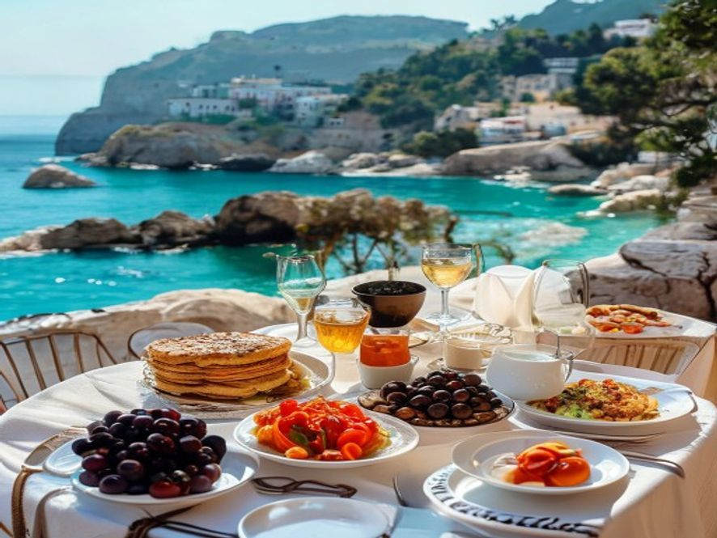
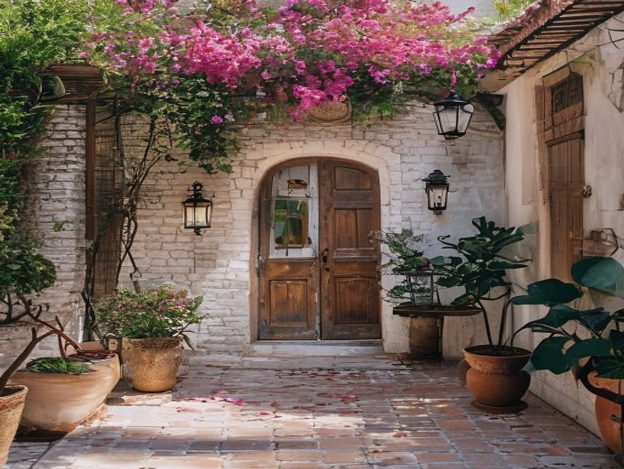
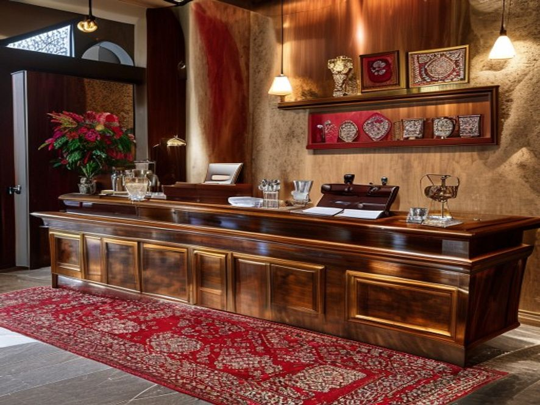

1. Pazar profili
Kaş, Antalya merkezi değildir. Kışın ~8.000 nüfus, yazın 50.000'e kadar çıkar. Her şey dahil dev tesisler yoktur — pazar butik oteller, pansiyonlar ve villalar üzerine kuruludur. İngilizce ikinci işletme dilidir; misafirler Avrupalılar, büyük şehirlerden gelen Türkler, dalış ve yamaç paraşütü tutkunlarıdır.
2 162
Kaş Expedia listelemesi
€172
Antalya bölgesi ADR (2023)
%56
Yıllık ortalama doluluk
5/12
Sezon süresi (ay/yıl)
Arz
- Kaş: Expedia'da ~2.162 kayıt (273 daire, 83 pansiyon, 19 villa, 287 hostel) ve ~150–200 küçük/butik otel.
- Kalkan (30 dakika mesafede): ~1.326 tesis, neredeyse tamamı butik otel ve havuzlu villa.
- B2B TAM: ~300–400 butik tesis + ~800–1.000 ticari villa.
Mevsimsellik ve ekonomi
- Yüksek sezon: Mayıs–Ekim, zirve Haziran–Ağustos.
- Düşük sezon: Kasım–Nisan — tesislerin çoğu fiilen ölü, birçoğu tamamen kapanır.
- Antalya bölgesi 2023: ADR €172,1 (+%19 YoY), RevPAR €96,8 (+%8), doluluk %56,2.
- Kalkan villaları: %9–12 yıllık getiri, sezonda ~€25.000 ciro, yazın %85 doluluk, zirvede haftalık €4.000'a kadar.

Klasik Kaş kahvaltı terası — premium butik segmentin görsel imzası
İşletmeci profilleri
- Kalkan = "İngiliz kolonisi": İngiliz, Alman ve Hollandalı villa sahipleri, çoğu Birleşik Krallık'ta yaşıyor ve uzaktan yönetiyor.
- Kaş = ağırlıklı Türk sahiplik + Rus/Avrupalı butik işletmeciler + dalış endüstrisi + yamaç paraşütü. Sahipler genellikle yerinde yaşar.
2. Satış kanalları ve OTA bağımlılığı
5/51Booking.com %15–25 komisyonu kâr marjını yiyor.
Temel oran %15'tir, ancak Preferred Partner Programme ve Genius indirimleri toplam yükü %25'e çıkarır.
5/52Rezervasyonların %80'i tek kanaldan.
Tipik bir Antalya butik oteli, gelirinin %80'ine kadarını Booking.com'dan alır (Luna Butik Hotel vakası). Algoritma değişikliği = bir haftada %30 gelir kaybı riski.
4/53Booking misafir e-posta/telefon bilgisini paylaşmıyor.
Tekrar kampanyaları, sadakat programları, doğrudan e-posta gönderimi imkânsız — misafir sizin değil, Booking'in misafiri olarak kalır.
4/54Fiyat eşitliği (rate parity) maddeleri.
OTA sözleşmeleri kendi sitenizde Booking'den daha düşük fiyat vermenizi yasaklar. Doğrudan kanalın temel argümanını öldürür.
3/55Türkiye içinde Booking.com yasakları.
İstanbul Ticaret Mahkemesi, TÜRSAB şikâyeti üzerine Booking.com'u Türk kullanıcılar için zaman zaman askıya aldı. Yabancılar yurt dışından rezerve edebilir, ancak iç pazardaki Türk misafirler yapamaz.
3. Mevsimsellik ve nakit akışı
5/565/12 mevsimselliği.
Yedi ay sıfır gelir. Maaşlar, kira ve vergiler bütün yıl akar; gelir sadece yarısında. Yüksek çıkış riski (Zhang & Xie 2023: yüksek doluluk dispersiyonu = artan iflas olasılığı).
4/57Dinamik fiyatlandırma yok.
Küçük oteller sabit fiyatla veya basit "yaz pahalı, kış ucuz" mantığıyla çalışır. Antalya merkezi rakipleri çoktan revenue management uyguluyor — Kaş geride.
4/58Yıl boyu kadro tutmak imkânsız.
Mevsimlik personel 5–6 ay gelip gider. Eğitilmiş ekip kaybı sürekli; her Mayıs sıfırdan eğitim.
3/59Mayıs/Ağustos zirvelerinde rezervasyon yığılması.
Fiyatlar bir haftada üç katına çıkabilir (Mayıs 2026 verisi: aynı otelde haftalık 51.000 ₽ → 147.000 ₽). Misafir beklenti-gerçeklik uçurumu ve olumsuz yorumlara yol açar.


4. Mevzuat ve vergiler
4/510Konaklama vergisi %2 + e-Fatura kodu 0059.
2023'te yürürlüğe girdi; aylık beyanname her ayın 26'sına kadar. Gecikme cezaları gerçek. Ağustos 2025 değişiklikleri ile yeni — bölgedeki muhasebeciler aşırı yüklü.
5/511Zorunlu turizm sertifikasyonu.
Mayıs 2024: hükümet, 2021'de getirilen ulusal turizm sertifikasını alamayan 4.000+ oteli ülke genelinde kapattı. Kaş'taki küçük tesisler risk altında.
3/512100+ yatak için sürdürülebilirlik sertifikası zorunluluğu (2026).
Kaş'ta doğrudan az tesisi etkiler — çoğunda <100 yatak vardır — ancak villa kompleksleri ve büyük oteller kapsama girer.
4/513Yabancı misafir kaydı / NDTS / e-Arşiv.
Her yabancı misafir 24 saat içinde sisteme girilmeli. Manuel süreç, yazın resepsiyonun zamanını yer.
4/514Yurt dışında yaşayan İngiliz/Alman sahipler Türk muhasebesini anlamıyor.
Kalkan'da sahiplerin çoğu BK'da; Türk muhasebeci tek temas noktası ve genellikle sessiz veya hatalı.
3/515Tekne turu, dalış, yamaç paraşütü lisansları.
Otel aktiviteyi satar, ancak yasal olarak bu seyahat acentesi işidir. Lisanssız = ceza.
5. Makro: enflasyon, lira, euro
5/516Enflasyon ve operasyonel maliyet patlaması.
Aralık 2024'te asgari ücrete +%49 zam sonrası bordrolar uçtu. Antalya küçük işletmesi bunu "felç edici sorun" olarak adlandırıyor.
4/517Kiralar iki kat arttı.
Komşu Konyaaltı'nda beach club kiraları aylık 2 milyon ₺'den 4 milyon ₺'ye çıktı. Kiralık çalışan oteller için felaket.
4/518Volatil lira karşısında EUR fiyatlandırma.
Booking fiyatları EUR'da, ödemeler TRY'de, gerçek gelir ±%15 oynar. Tedarikçi sözleşmeleri (gıda, çamaşırhane, taksi) TRY'de ve yıllık ~%50 enflasyonla.
5/519Türkiye artık turistler için "pahalı ülke".
Antalya bölgesi aile başına gecelik: $100–130 → $150–200. 2025'te Almanya/BK/Rusya ziyaret düşüşü. Turizm Bakanlığı bizzat "pahalı ülke" imajını ana engel olarak kabul ediyor.
4/520Güçlü lira akışı azaltıyor.
Yıllık yabancı turist artışı +%4,99'dan (Ara 2025) +%3,48'e (Oca 2026) düştü. Premium uç olarak Kaş bunu ilk hisseden yer.
6. Personel ve hizmet
4/521Yetenek göçü — yöneticileri Dubai ve Doha alıyor.
Türk otelcilik liderleri Körfez'de 2,5–3 kat fazla, vergisiz, yıl boyu kazanıyor. Antalya 5* GM pozisyonları 6–9 ay açık kalıyor. Aynı etki Kaş'ta da geçerli — hazır yöneticiler gidiyor.
4/522Resepsiyonun İngilizcesi zayıf.
Kalkan misafirlerinin %60–70'i İngiliz; Kaş misafirleri çok dilli Avrupalı. Resepsiyon genellikle Türkçe + temel İngilizce. Yorumlardaki şikâyetler doğrudan puana yansıyor.
4/523Resepsiyonda WhatsApp aşırı yükü.
Yazın günde 20–50 mesaj: "taksi nerede", "kahvaltı kaçta", "restoran rezerve et". AI konsiyerj olmadan resepsiyon yanıyor.
3/5243 dilde yorum yanıtlamak saatler alıyor.
TripAdvisor + Google + Booking, EN/RU/TR. Sahip kişisel yanıtlamalı — yüksek sezonda günde 1–2 saat.
3/525Booking için düşük kaliteli fotoğraflar.
Doğrudan korelasyon: fotoğraf → dönüşüm. Çoğu küçük tesis 5 yıl önce telefonla çekti. Foto yenileme = +%12 CTR.
7. Pazarlama ve içerik
4/526Instagram/TikTok için kaynak yok.
İstanbul/Antalya SMM ajansları aylık $1–2K istiyor — erişilemez. Sahipler yetiştiremiyor. Hesaplar 2023'ten beri donmuş.
3/527Google Ads / doğrudan pazarlama yok.
"Kalkan villa", "Kaş butik otel" yüksek niyetli aramalardır. Küçük tesisler arasında kimse teklif vermiyor. Trafiğin tümü Booking'e gidiyor, o da %20 kesiyor.
3/528Manuel rakip izleme.
Sahipler iki haftada bir 1–2 saatini komşuların fiyat/uygunluk/yorumlarını manuel taramaya harcıyor. Otomasyon yok.
8. İklim, altyapı, doğal risk
4/529Orman yangınları.
Antalya ve Muğla 2014–2024 yanan alanda ilk sıralarda. Kaş'ta 26–27 Haziran 2021 yangını. Her yaz tehdit — tahliyeler, iptaller, sigorta talepleri.
3/530Temmuz–Ağustos sıcağı + altyapı yığılması.
"Kaş Temmuz-Ağustos'ta aşırı kalabalık, hava çok sıcak olabilir." Su, otopark, sahil şikâyetleri — kontrol dışı faktörler nedeniyle otelin puanı düşer.
2/531Sismik / sel / fırtına riski.
Bölge risk bölgesinde. Türk sigortacılar tarifeleri sıkıyor.
3/532İnşaat ve SİT-alanı kısıtlamaları.
Kaş'ın bir kısmı arkeolojik/koruma alanı. Renovasyon, genişletme, hatta pencere değişimi bile aylar sürebilen izinler gerektirir.
9. Dijital olgunluk
3/533PMS yok ya da yerel "Türk" sürümü.
Küçük oteller genellikle Excel veya yerel Hotelogix/Hotelinking varyantlarında çalışır. Modern channel manager / revenue araçlarıyla entegrasyon yok.
4/534CRM yok.
Misafir 3 kez geldi — otel adını bilmiyor. Tekrar pazarlama = 0.
3/535Analitik yok.
Sahip aylık gerçek RevPAR / ADR / doluluk değerlerini bilmiyor. Fiyatlandırma kararları sezgiyle.
10. Öncelikli 10 sorun
| # | Sorun | Önem | En çok etkilenen |
|---|---|---|---|
| 1 | %80 Booking bağımlılığı + %15–25 komisyon | 5 | Herkes |
| 2 | 5/12 mevsimsellik, kışın nakit akışı yok | 5 | Herkes, özellikle küçük |
| 3 | Enflasyon + maaş + kira | 5 | Kiracı işletmeciler |
| 4 | Türkiye "pahalı" → AB/BK talep düşüşü | 5 | Premium Kalkan segmenti |
| 5 | Sertifikasyon — kapatılma riski | 5 | Sertifikasız tesisler |
| 6 | Dinamik fiyatlandırma yok → %12–18 RevPAR kaybı | 4 | Butik oteller |
| 7 | Yetenek göçü, zayıf İngilizce resepsiyon | 4 | Premium segment |
| 8 | Konaklama vergisi + e-Fatura uyumluluğu | 4 | Herkes, özellikle uzaktaki sahipler |
| 9 | Yazın WhatsApp aşırı yükü | 4 | Yüksek doluluk tesisleri |
| 10 | CRM yok / tekrar kampanyaları yok | 4 | Herkes |
11. AI / B2B ürünleri için çıkarımlar
Yukarıdaki sorunlara göre satın alınmaya en hazır beş ürün:
KaşDirect
5 dilde AI sohbet ile doğrudan rezervasyon sitesi.
Sorunlar #1, #2, #3
Konaklama Autopilot
Vergi + e-Fatura + yabancı misafir kaydı için bot.
Sorunlar #10, #13, #14
ReputationVoice
TripAdvisor/Google/Booking yorumlarına AI yanıtlar.
Sorunlar #24, #22
WhatsGuest Concierge
WhatsApp'ta AI konsiyerj + yan satış.
Sorun #23 + upsell
PriceRadar
Dinamik fiyatlandırma + rakip izleme.
Sorunlar #7, #28